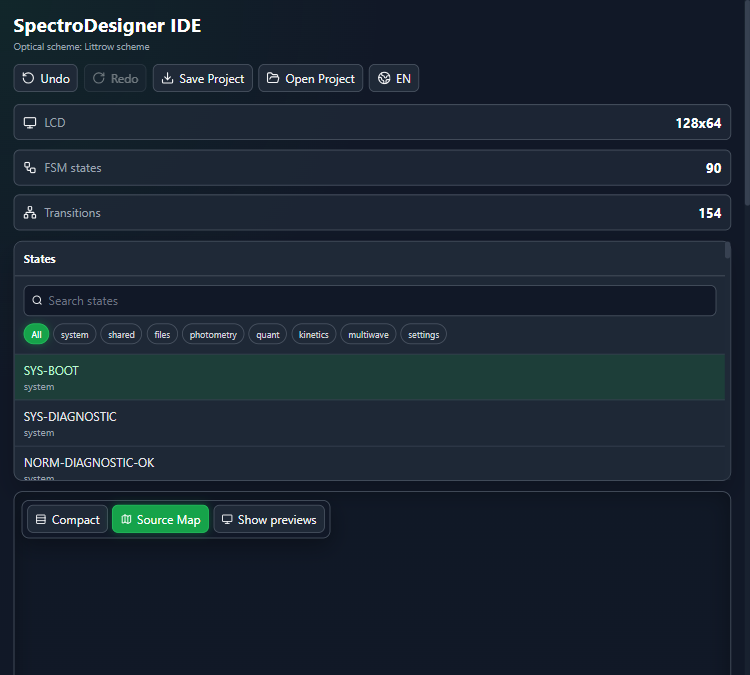

Pixel LCD editor
Draw text, bitmap layers, glyphs and primitives against strict monochrome display bounds.
Design monochrome LCD screens, FSM navigation, bitmap fonts, control panels and firmware exports in one deterministic offline desktop tool.
The project file is the contract: screens, states, transitions, tags, procedures, alarms and export settings stay together and can be reviewed, tested and generated repeatably.
Draw text, bitmap layers, glyphs and primitives against strict monochrome display bounds.
Model UI states, event triggers and transition logic with validation and automatic graph layout.
Walk through state flows, trigger events and inspect tag-driven screen updates before firmware integration.
Generate C, binary, XBM, Arduino, Rust embedded-graphics and ESP-IDF artifacts.
Centralize multilingual screen copy and move translations through CSV hand-offs.
Operate the open desktop project through REST and MCP from local coding agents and scripts.
LCD-bitmap IDE keeps the visual screen model close to the behavior model. Engineers can inspect the FSM graph, edit pixels, bind runtime values and export firmware assets without switching tools.

A practical path from first measurement screen to firmware-ready payload.
Installers and portable builds are published from GitHub Releases. The source build path stays available for developers and reviewers.
Download the latest Setup or Portable build from GitHub Releases.
Download AppImage, deb or tar.gz from GitHub Releases.
Run npm ci and npm run electron:dev for local desktop development.
Use the operation manual for first-time users and the LLM lifecycle manual when Claude Code, Codex, OpenCode, LM Studio or Ollama drives the project through API/MCP connectors.
Use local agents as engineering assistants. Read the active project, create states, update tags, compile screens or fire runtime events while the desktop UI remains visible.
curl http://127.0.0.1:8766/api/health
curl http://127.0.0.1:8766/api/project/meta
curl -X POST http://127.0.0.1:8766/api/runtime/event \
-H "Content-Type: application/json" \
-d "{\"eventId\":\"START\"}"Connect Claude Code, Codex, OpenCode or other MCP-capable tools to http://127.0.0.1:8767/mcp. For LM Studio and Ollama, use a thin tool wrapper around the REST API.
Clone, install and open the neutral demo project.
git clone https://github.com/myahlovvlad/LCD-bitmap-IDE.git
cd LCD-bitmap-IDE
npm ci
npm run electron:dev